2.8. Sitecore Connect for Sitecore CMP¶
Sitecore Connect for Sitecore CMP 1.0.0 を利用することで、Content Hub で作成したコンテンツを、Sitecore のアイテムとして追加することができるようになります。
ここではモジュールのインストールと動作検証まで紹介をします。
2.8.1. 必要システム¶
Sitecore Connect for Sitecore CMP 1.0.0 は以下のシステムで利用することができます。
Sitecore Experience Platform 9.2
Sitecore Experience Manager 9.2
Sitecore Experience Platform 9.1
Sitecore Experience Manager 9.1
注釈
本文書は Sitecore Experience Platform 9.2 の内容となっています。
2.8.2. モジュールのダウンロード¶
以下のページからモジュールのダウンロードをします。
この解説では Sitecore Connect CMP for Sitecore XP 9.2 をダウンロードしてインストールを進めます。
2.8.3. モジュールのインストール¶
モジュールのインストールは、「コントロールパネル」－「パッケージをインストールする」を開いてください。
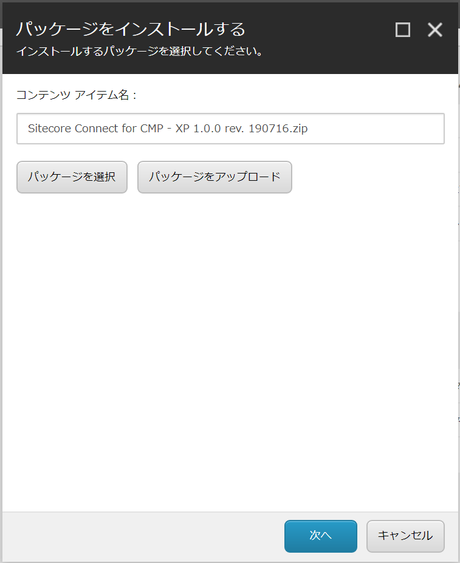{kind=link}
モジュールのインストールが完了すれば、あとは設定のみとなります。
2.8.4. Microsoft Azure Service Bus の設定¶
Sitecore Content Hub CMP と Sitecore の接続をする際に Microsoft Azure Service Bus の設定が必要となります。ここではサンプルを1つ作成します。
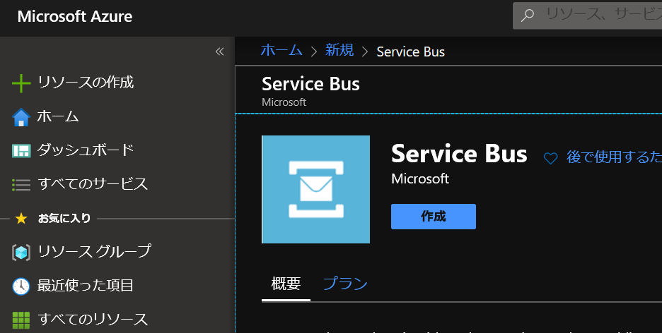{kind=link}
設定する項目は以下の通りです
設定項目 |
設定値 |
|---|---|
名前 |
名前を設定します |
価格レベル |
Standard |
サブスクリプション |
お持ちのサブスクリプション |
リソースグループ |
追加するリソースグループ |
場所 |
利用するデータセンター |
今回は以下のように設定をしました。
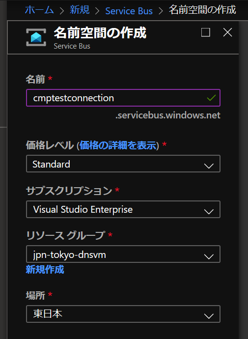{kind=link}
作成した Service Bus を開いて、左側のメニューからエンティティの中にあるトピックを選択します。

新しいトピックを作成します
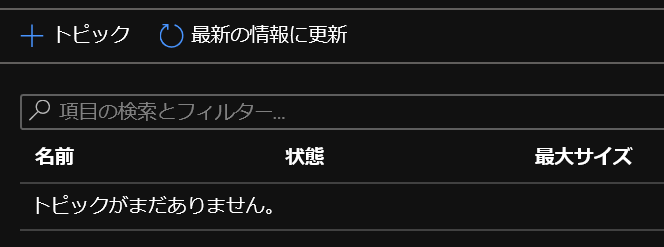{kind=link}
今回は以下のように設定をします。
設定項目 |
設定値 |
|---|---|
名前 |
m_out |
トピックの最大サイズ |
1GB |
メッセージの Time to Live |
14日 |
重複データ検出を有効にする |
チェック無し |
パーティション分割を有効にする |
チェック無し |
{kind=link}
作成をした m_out のトピックを開きます。ここで、サブスクリプションを作成します。
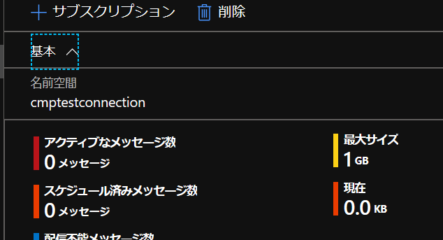{kind=link}
設定項目 |
設定値 |
|---|---|
名前 |
sitecore |
メッセージの Time to Live |
14日 |
ロック期間 |
30秒 |
最大配信数 |
1 |
{kind=link}
これで Service Bus の準備完了となります。
2.8.5. Content Hub CMP の設定¶
2.8.5.1. スーパーユーザーの作成¶
CMP から Azure Servie Bus にメッセージを送るための管理者を作成します。Content Hub の管理画面で、「管理」―「ユーザー」を開いて、「ユーザーの追加」をクリックします。
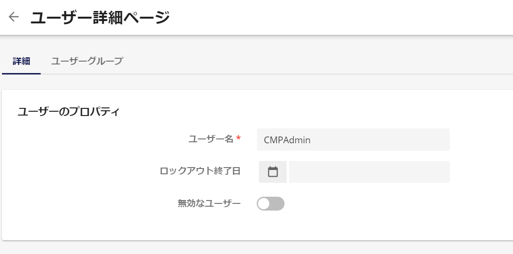{kind=link}
ユーザーグループのタブを選択し、「グループメンバーシップ」に Superusers を追加してください。
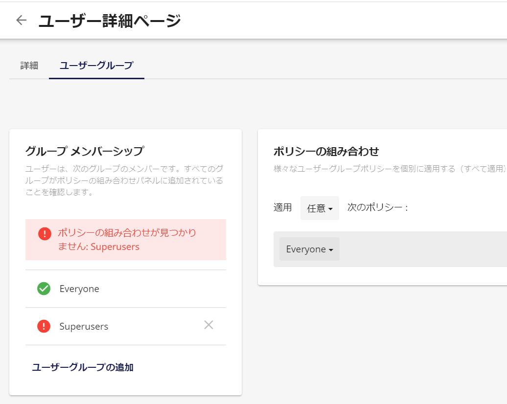{kind=link}
保存をクリックすると、警告が出てきますが、今回は Superusers の追加で問題ないので、そのまま続けます。
アカウントのパスワードを設定するために、作成したユーザーのプロファイルの編集を開きます。開いた後、パスワードリセットをするためのメールアドレスを入れてください。
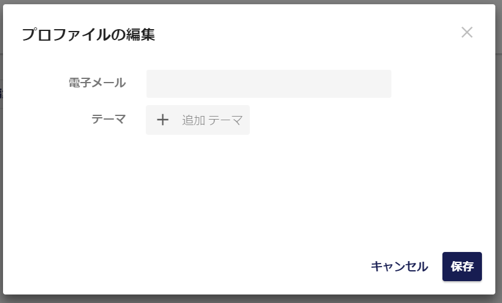{kind=link}
メールアドレスを設定したあと、「パスワードのリセット」のボタンが有効になるため、これをクリックしてパスワードをリセットします。
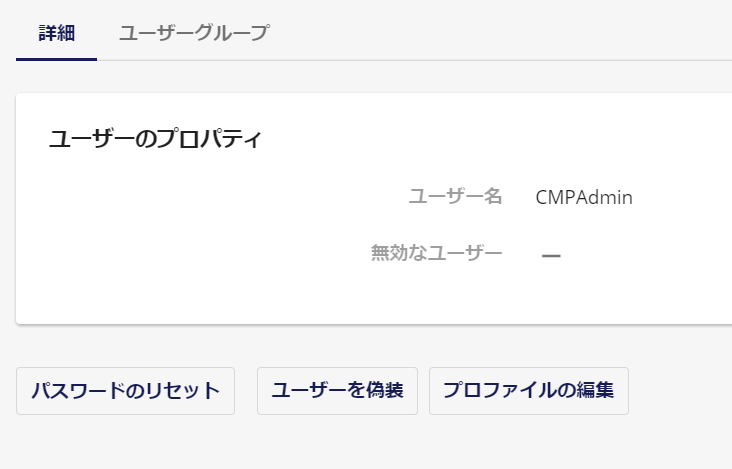{kind=link}
パスワードリセットのメールが、指定したメールアドレスに届きます。メールは迷惑メールに入る可能性もあるため、迷惑メールフォルダも確認をしてください。
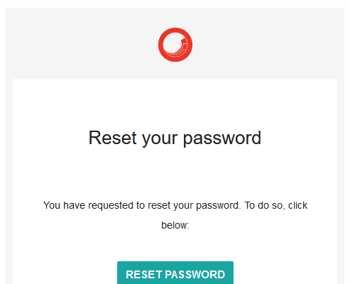{kind=link}
パスワードをいれて、新しいパスワードを設定して下さい。
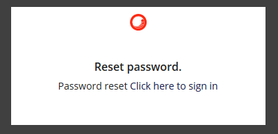{kind=link}
新しいアカウントでログインが可能か確認をしてください。
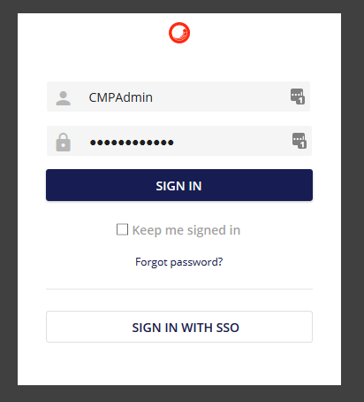{kind=link}
ユーザー名と設定したパスワードでログインが出来た段階で、管理者アカウントの完成となります。
2.8.5.2. アクションの作成¶
Content Hub のアクションを作成します。「管理」－「アクション」を開き、「新規アクション」をクリックします。作成をする際には、形式を Azure Service Bus に変更することで、接続文字列などを入力できるようになります。
設定項目 |
設定値 |
|---|---|
名前 |
sitecore |
ラベル |
|
形式 |
Azure Service Bus |
接続文字列 |
（後述） |
送信タイプ |
トピック |
送信先 |
m_out |
接続文字列は Microsoft Azure から以下のように取得します。
先ほど作成をした Service Bus の設定を開きます
共有アクセスポリシーを選択します
表示される RootManageSharedAccessKey をクリックします
プライマリ接続文字列 をコピーしてください
例 .. code-block:
Endpoint=sb://名前.servicebus.windows.net/;SharedAccessKeyName=RootManageSharedAccessKey;SharedAccessKey=キー
{kind=link}
作成するアクションは以下のようになり、テスト接続に成功するか確認をしてください。
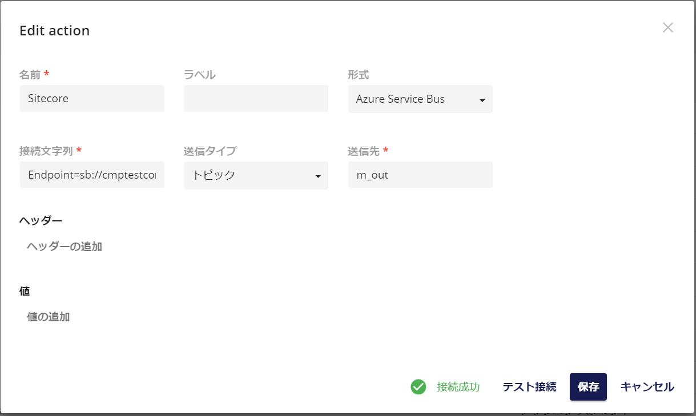{kind=link}
2.8.5.3. トリガーの作成¶
続いて Content Hub のコンテンツのステートが変更されたタイミングで、作成をしたアクションが動くようにトリガーを設定します。「管理」－「トリガー」を開いて、「新規トリガー」を作成します。
基本の項目は以下のように今回は設定をします。
設定項目 |
設定値 |
|---|---|
名前 |
SitecoreCMP |
目的 |
エンティティの変更 |
実行タイプ |
バックグラウンドで |
{kind=link}
続いて条件を開き「定義の追加」をクリックします。定義の追加では M.Content をまずは選択します。
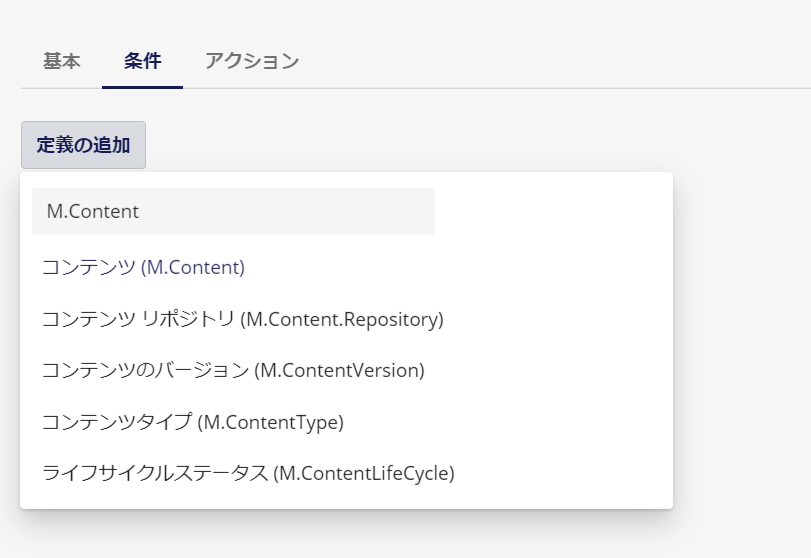{kind=link}
続いて、条件を以下の画像のように設定をしてください。
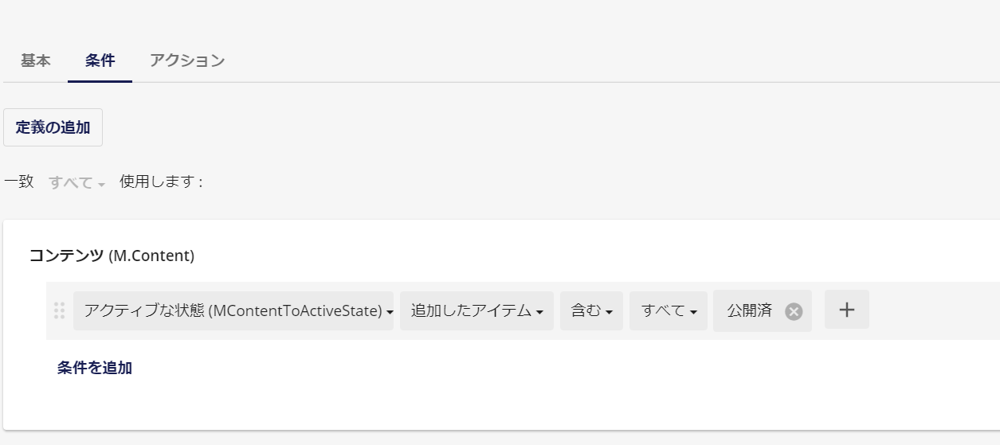{kind=link}
最後にアクションタブを選択し、「アクションの追加」をクリックします。ここで、先ほど作成をしたアクションを指定します。ここでは Sitecoreを作成したので、一番下の項目を選択します。
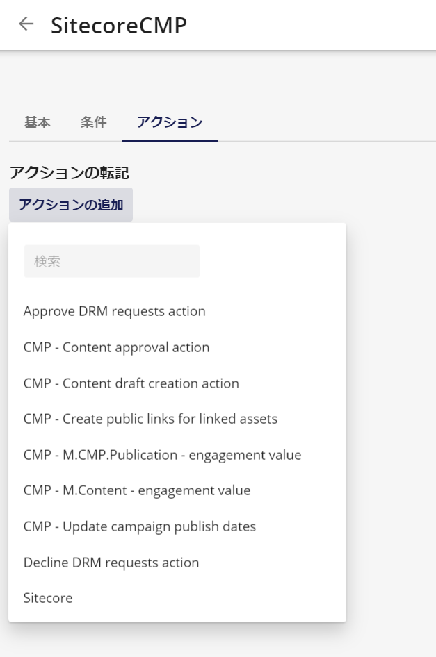{kind=link}
選択をしたあと、保存をすると、トリガーに合わせてアクションが動くようになります。
2.8.6. Sitecore の設定¶
Content Hub から Service Bus につながりましたので、次は Service Bus と Content Hub に関する設定を Sitecore 側に追加していきましょう。
2.8.6.1. Service Bus に関する設定¶
Sitecore の設定としては、 /sitecore/system/Modules/CMP/Config にあるアイテムに設定を入れる必要があります。
設定項目 |
設定値 |
|---|---|
Client Id |
LogicApp |
Client Secret |
（後述） |
ユーザー名 |
作成した管理者名 |
Password |
作成した管理者のパスワード |
Content Hub URI |
Content Hub のサーバー URL |
Connection String |
Service Bus の Endpont |
Incoming topic name |
m_out |
Incoming subscription name |
sitecore |
Outgoing topic name |
m_in |
Default Language |
en |
Client Secret に関しては、Content Hub の管理画面から取得することができます。「管理」－「OAuth クライアント」をクリックして、今回利用する LogicApp の鉛筆マークをクリック、クライアントシークレットを取得してください。
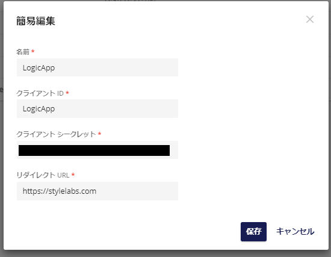{kind=link}
設定した内容は以下のようになります（設定項目は環境に合わせて入力してください）。
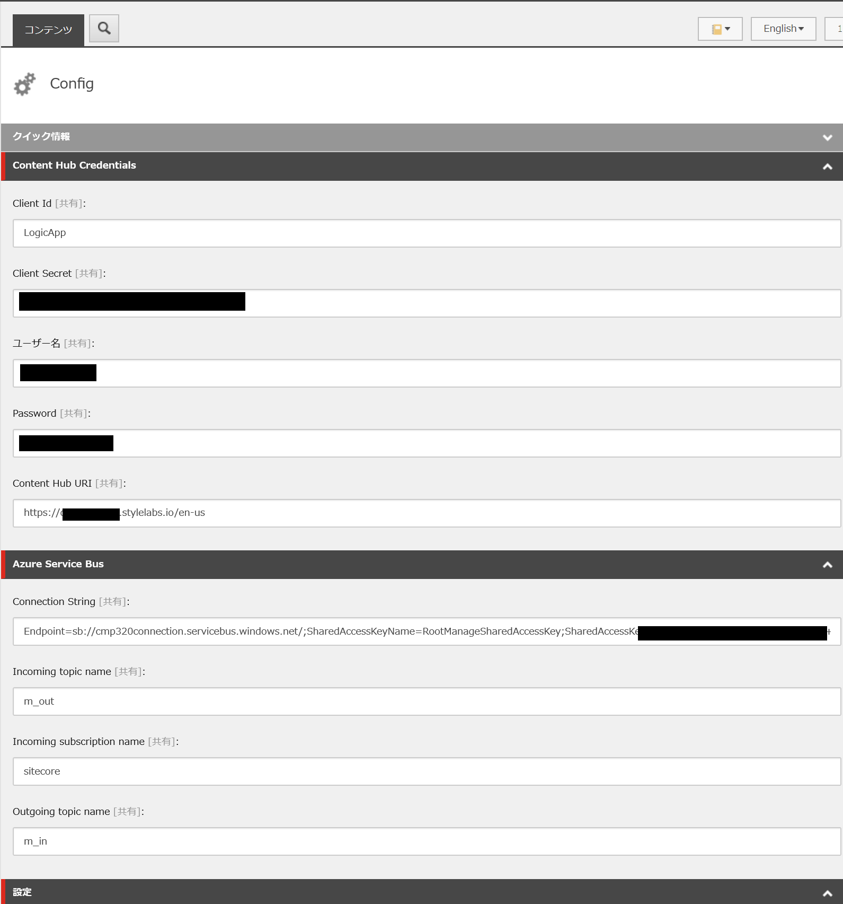{kind=link}
2.8.6.2. 連携アイテムの作成¶
今回は Content Hub でブログの記事が投稿された場合に、Sitecore にブログのアイテムが作成される、という設定を追加します。まず、データのテンプレートを作成します。
テンプレートとして Blog テンプレートを作成、Title ( Single-line Text ）と Body ( Multi-line Text ）を作成します。
{kind=link}
作成したテンプレートの「コンテンツタブ」を開いて、テンプレートのデータとして、Templates/CMP/Content Hub Entity のテンプレートを追加します。
{kind=link}
続いてバケットを作成します。 /sitecore/content/CMP アイテムを右クリックして、バケットをつ追加します。
{kind=link}
名前を今回は Blogs と指定します
{kind=link}
/sitecore/system/Modules/CMP/Config のアイテムを右クリックして、 Entity Mapping のアイテムを作成します。
{kind=link}
Blog を作成
作成した Blog アイテムを右クリックして、 field Mapping を作成します。今回は、Body と Title の２つを作成します。完成下ツリーは以下の通り。
Blog アイテムには、以下の項目を設定します。
設定項目 |
設定値 |
|---|---|
Content Type Id |
M.ContentType.Blog |
バケット |
事前に作成をしたバケット |
テンプレート |
事前に作成をしたテンプレート |
{kind=link}
Body と Title に関しては、Content Hub のフィールド名と作成をしたテンプレートのフィールド名のマッピングを設定します。今回は以下のように設定をします。
{kind=link}
{kind=link}
これで設定は一通り完了しました。なお、設定を反映させるためには Sitecore を一度再起動する必要があります。
2.8.7. 連携の確認¶
実際に正しく動作しているか、確認をします。まず、作成した段階では何も Blogs のアイテムに含まれていないのを確認します。
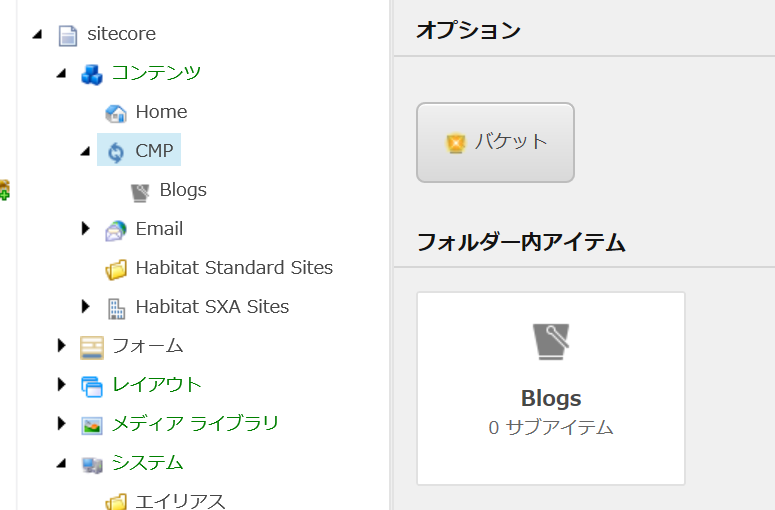{kind=link}
Content Hub にアクセスをして、右上にある「＋コンテンツ」のボタンをクリックします。
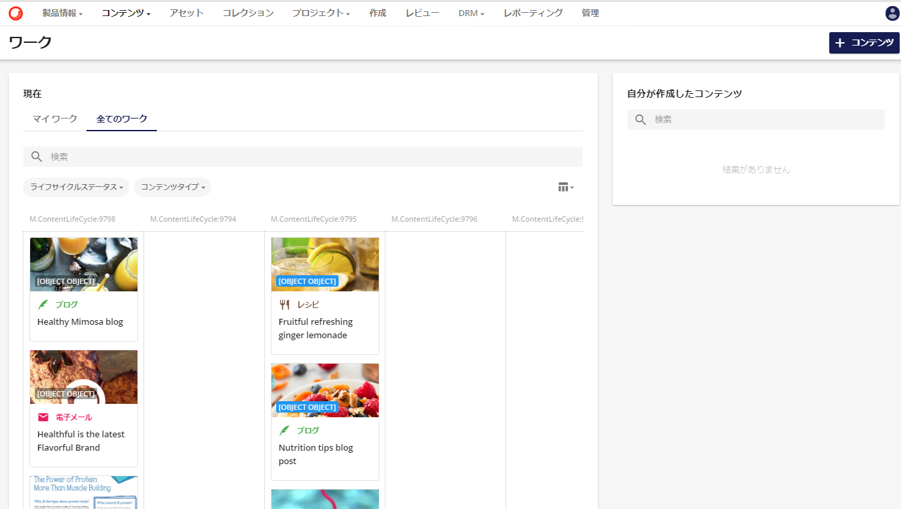{kind=link}
今回はブログの設定をしているだけなので、コンテンツのタイプとして「ブログ」を選択します（ダイアログ一番下の項目）。
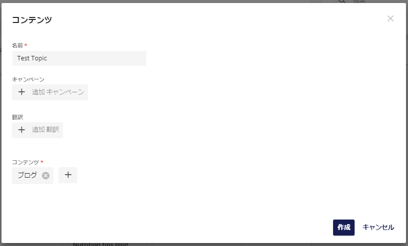{kind=link}
右上にある「編集」ボタンをクリックします。
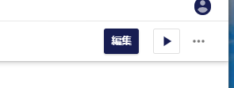{kind=link}
タイトル、記事の入力エリアが有効になります。今回はテストのため簡単な記事を入れておきます。
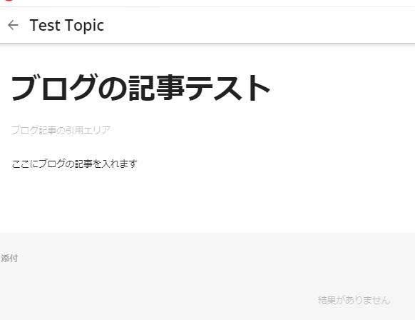{kind=link}
保存をして、ワークフローに関して「公開」まで進めていきます。しばらくすると、Sitecore にブログのアイテムが作成される、という設定を追加します。まず、データのテンプレートを作成します。
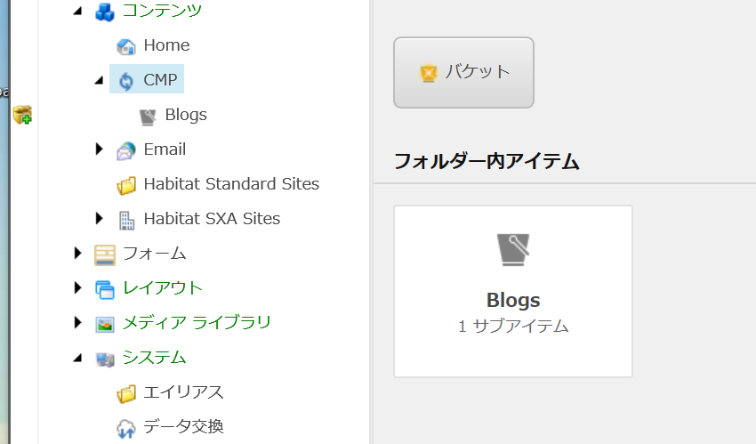{kind=link}
バケットの中にあるアイテムを参照するために、コンテンツエディターの「表示」エリアから「バケット」をチェックしますｓ。
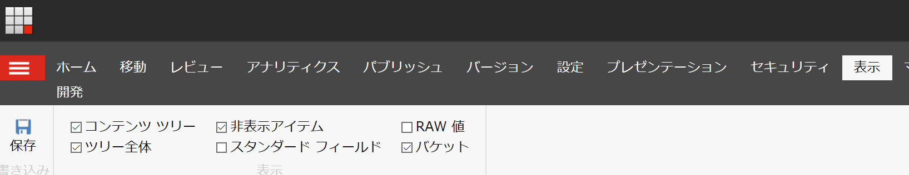{kind=link}
表示ができるモードに切り替わると、ツリービュー形式でアイテムを確認することができるようになります。
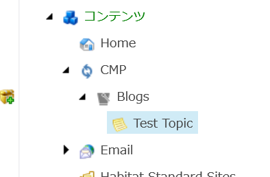{kind=link}
表示されたアイテムを選択すると、Content Hub で入力された情報が反映されていることを確認できます。
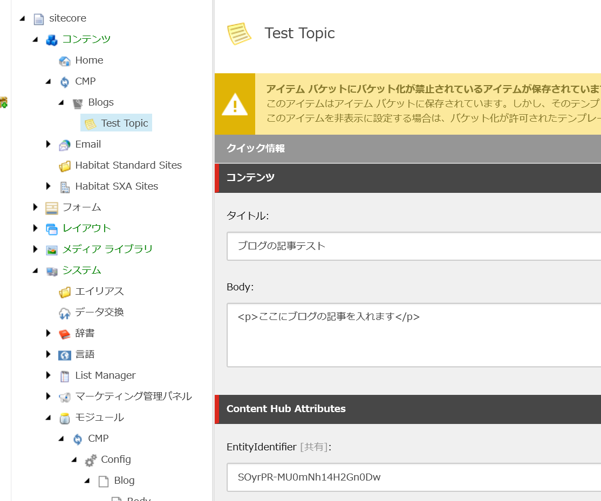{kind=link}
このように、Content Hub で作成した情報を Sitecore で利用することができるようになります。